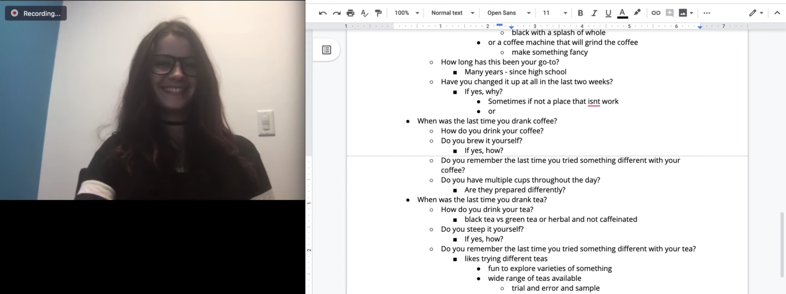

Discover research & analysis
We began with a research plan and conducted semi-structured interviews to gather insights on drink-ordering behavior. This data was used to start our working sessions to create low fidelity product concepts for the drink-ordering app.
Key points were taken from the interviews and organized into themes and opportunity clusters on Miro